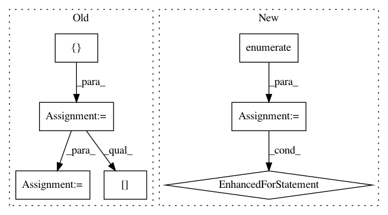

f816b2d21de51ea97a45d8cbece6a528848c56e4,examples/03_connectivity/plot_compare_decomposition.py,,,#,33
Before Change
names = {dict_learning: "DictionaryLearning", canica: "CanICA"}
estimators = [canica, dict_learning]
components_imgs = [canica_components_img, dictlearning_components_img]
// Selecting specific maps to display: maps were manually chosen to be similar
indices = {dict_learning: 8, canica: 14}
// We select relevant cut coordinates for displaying
cut_component = index_img(components_imgs[0], indices[dict_learning])
cut_coords = find_xyz_cut_coords(cut_component)
for estimator, components in zip(estimators, components_imgs):
// 4D plotting
plot_prob_atlas(components, view_type="filled_contours",
title="%s" % names[estimator],
After Change
//////////////////////////////////////////////////////////////////////////////////////////////////////////////////////////////////////////////////////////////
// One plot of each component
for i, cur_img in enumerate(iter_img(dictlearning_components_img)):
plot_stat_map(cur_img, display_mode="z", title="Comp %d" % i,
cut_coords=1, colorbar=False)
show()
////////////////////////////////////////////////////////////////////////////////////////////////////////////////////////////////////////////////////////////////
// .. note::
//
In pattern: SUPERPATTERN
Frequency: 4
Non-data size: 7
Instances
Project Name: nilearn/nilearn
Commit Name: f816b2d21de51ea97a45d8cbece6a528848c56e4
Time: 2019-04-18
Author: gael.varoquaux@normalesup.org
File Name: examples/03_connectivity/plot_compare_decomposition.py
Class Name:
Method Name:
Project Name: jonathf/chaospy
Commit Name: f47485cc4a21fb18564ede7ab0cc9001dbd0f1d9
Time: 2020-06-10
Author: jonathf@gmail.com
File Name: chaospy/descriptives/sensitivity/total.py
Class Name:
Method Name: Sens_t
Project Name: jonathf/chaospy
Commit Name: f47485cc4a21fb18564ede7ab0cc9001dbd0f1d9
Time: 2020-06-10
Author: jonathf@gmail.com
File Name: chaospy/descriptives/sensitivity/main.py
Class Name:
Method Name: Sens_m
Project Name: WheatonCS/Lexos
Commit Name: 62f66421474f85d8ee0eb14db9bc3ff7314497ad
Time: 2017-08-02
Author: weltch1997@gmail.com
File Name: lexos/processors/analyze/topword.py
Class Name:
Method Name: analyze_group_to_group